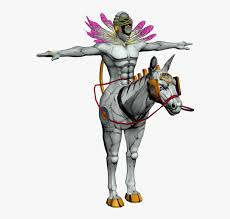

Weekly edition: week 1
A side project maintained by RandomAOne and Flarium
I announce this with great pleasure that the snitch's web page is finally updated after a 2 month long wait. The lack of content and the dark clouds of boards looming over us caused it shut down temporarily, however in the near future this could be shut down permanently

According to recent group discussions, it is apparent that a small holi celebration will commence on 23rd March after our last board exam
again, this seems similar to the shirt signing day(s) so the ones with skin allergies are gonna just stare and watch as the other people enjoy themselves
Nothing much is known to the editor about this other than the fact that this will be the most hyped event as of now
sidenote: I just wrote the third paragraph to test out the new code and seems like its working as intended.
Finally after making a reddit account, I got a stable supply of fresh memes for this "newspaper" so yeah, expect a whole new page for memes too in a later update
Subject slanders have stolen the show but that doesnt make image memes any less relavant however they have gotten a LOT repetitive and boring so yeah, there might a small loss in quality